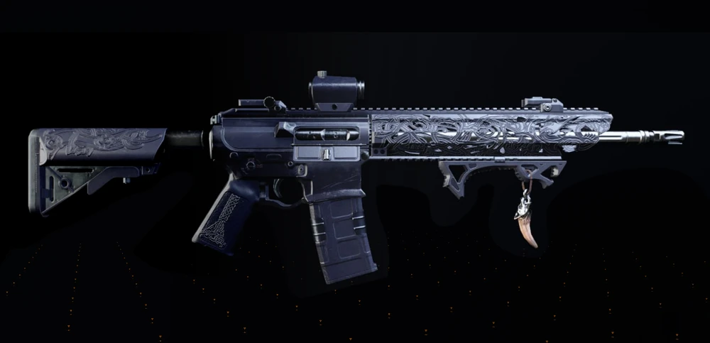
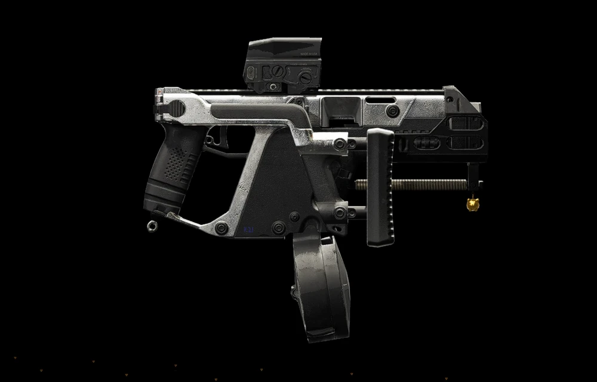
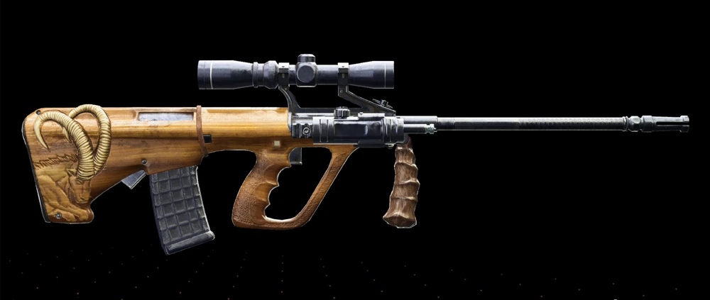

Melhor exótica DPS
Ouroboros domina builds agressivas atualmente.
As exóticas são um dos maiores motivos para os jogadores repetirem raids, incursão, missões lendárias e outras atividades de endgame. Esta página reúne as mais desejadas do portal, com foco em Eagle Bearer, Ravenous, Regulus, Ouroboros e Bighorn, mostrando onde farmar, como organizar a rotina e qual tipo de build combina com cada uma.
Ouroboros domina builds agressivas atualmente.
Eagle Bearer e Ravenous continuam essenciais.
Regulus exige organização e consistência.
Estas são as exóticas que mais combinam com o tipo de conteúdo que você já está montando no portal. Cada uma pode virar uma página própria depois, com build recomendada, atividade, erros comuns e rotina de farm.

Uma das exóticas mais famosas de The Division 2. Ela conversa muito bem com a área de raids e deve aparecer como grande atrativo da Operation Dark Hours.

Exótica muito associada ao desafio técnico da Operation Iron Horse. Boa para destacar o lado mais coordenado e avançado do portal.

A Regulus é interessante porque não é só “dropar e pronto”. Ela envolve progressão e organização, o que rende conteúdo ótimo para guias detalhados.

A grande estrela da Paradise Lost. É uma exótica perfeita para puxar tráfego entre incursão, builds e farm semanal.

Uma exótica que ajuda a conectar seu conteúdo de raids com a área de missões lendárias. Boa para mostrar que o endgame do portal vai além de raids e incursão.
O jogador volta mais ao site quando encontra uma rotina clara. Em vez de só dizer onde a exótica dropa, vale mostrar como otimizar tentativas semanais e como organizar o grupo de forma prática.
O próximo passo ideal é expandir o catálogo completo e ligar cada exótica às builds e atividades mais relevantes do portal.